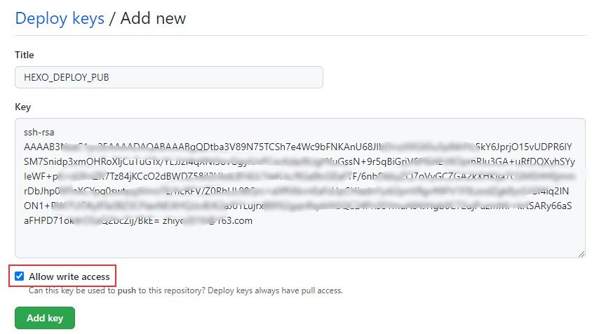
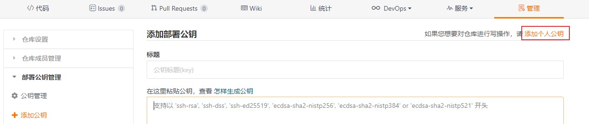
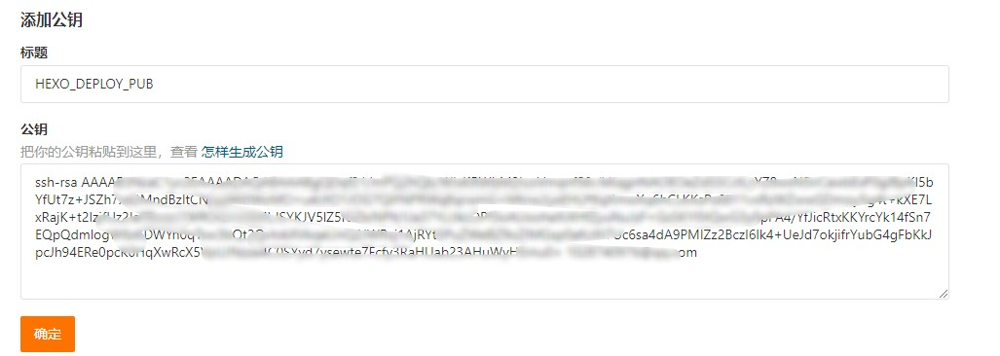
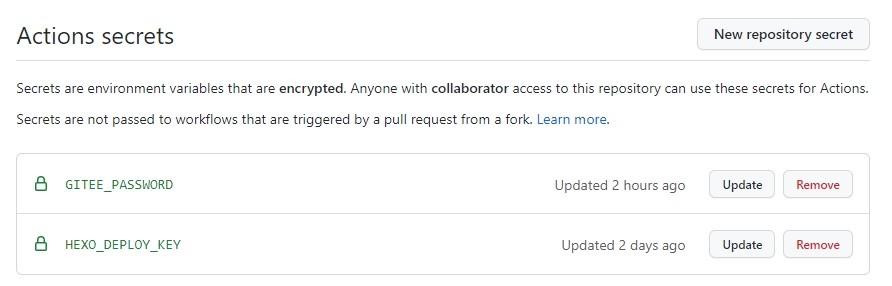
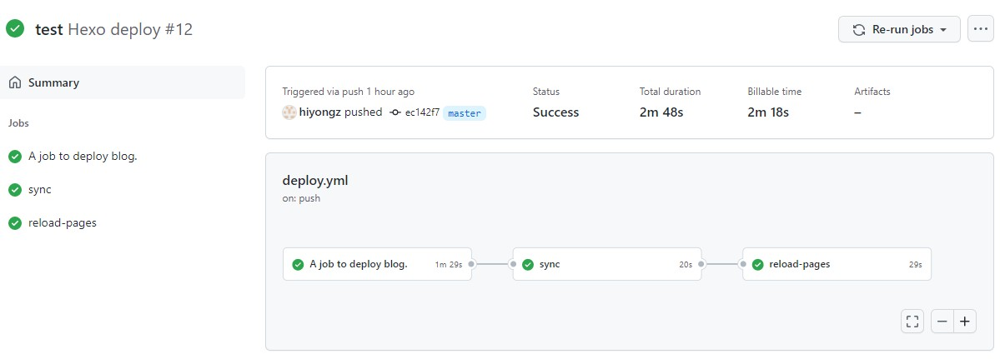

我在使用jenkins实现hexo博客自动发布中介绍了可以使用jenkins实现博客自动发布，其实还有一种更简单的方法，就是GitHub提供的持续集成服务：GitHub Actions。下面就来介绍一下如何使用GitHub Actions来实现将hexo博客自动编译及发布到GitHub Pages和Gitee pages上。
GitHub Actions 简介
GitHub Actions把代码拉取，打包，触发测试，发布等操作当成一个个的actions，持续集成就是将这些actions组合起来，jenkins也类似。
在项目的.github/workflows 目录中创建一个yaml格式的workflow 文件来编写GitHub Actions 工作流程，GitHub会自动运行该文件。workflow语法可参考：https://docs.github.com/cn/actions/learn-github-actions/workflow-syntax-for-github-actions
开发者可以将actions放到代码仓库供其他开发者引用，可以到官网搜索开源的actions：https://github.com/marketplace?type=actions
可以使用GitHub Actions实现博客自动发布，将静态博客页面部署到多个服务器上，比如GitHub Pages，Gitee pages以及云服务器上。本文使用GitHub Actions实现将Hexo博客自动编译并发布到GitHub Pages 和 Gitee pages上，并且实现Gitee pages自动更新。
下面介绍具体的配置流程。
环境准备
博客仓库
我的个人博客是使用 hexo 框架搭建的，搭建方法可参考Hexo+Github/Gitee 搭建个人博客。
主要包括三个仓库：
- 私有仓库Blog：存储 Hexo 项目文章以及源代码
- Github公共仓库hiyongz.github.io：存储编译之后的静态页面。
- Gitee公共仓库：内容和hiyongz.github.io一样，只是使用的服务不同。
使用GitHub Actions要实现的是当Blog仓库指定目录有更新时，触发自动编译并部署博客到hiyongz.github.io仓库中，并将hiyongz.github.io仓库同步到Gitee公共仓库，同步完成后，更新Gitee Pages。
GitHub Token配置
配置发布秘钥，用于将生成的静态博客文件 push 至 GitHub Pages 所在的仓库hiyongz.github.io：
1、生成秘钥
执行如下命令生成公钥和私钥，替换邮件地址为你的github邮箱地址，其实也可以不使用邮箱，这里只是为了便于辨识。
1 | ssh-keygen -f hexo-deploy-key -t rsa -C "username@example.com" |
命令执行后会生成两个文件：hexo-deploy-key 和 hexo-deploy-key.pub 。
2、将公钥添加到Github Pages仓库中
步骤：hiyongz.github.io仓库 -> Settings -> Deploy keys -> Add deploy key
- Title设置为
HEXO_DEPLOY_PUB(可以根据自己喜好设置) - Key填写
github-deploy-key.pub文件内容 - 勾选
Allow write access选项

3、将私钥添加到博客源码仓库中
步骤：博客仓库 -> Settings -> Secrets -> New repository secret
- Name 填写
HEXO_DEPLOY_KEY。 - Value 填写
github-deploy-key文件内容。

Gitee Token配置
Gitee Token配置和Github类似。
秘钥不需要重新生成，直接使用前面生成的秘钥。
1、将公钥添加到Gitee Pages仓库中
步骤：gitee pages仓库 -> 管理 -> 公钥管理 -> 添加部署公钥
和github一样需要对仓库有写权限，点击【添加个人公钥】

复制粘贴文件 github-deploy-key.pub 中的内容

2、将私钥添加到Github的博客源码仓库中
不需要重新创建，直接使用 HEXO_DEPLOY_KEY 就行。
3、配置Gitee 帐号的密码
步骤：Github博客仓库 -> Settings -> Secrets -> New repository secret
- Name 填写
GITEE_PASSWORD。 - Value 填写Gitee 帐号的密码。

配置workflow文件
下面来配置 Github Actions，编写workflow文件。
在博客仓库根目录下创建 .github/workflows/deploy.yml 文件，yaml文件名可以随意设置。
下面是我的workflow文件（参考了Hexo Action和Gitee Pages Action提供的例子）：
1 | name: Hexo deploy |
部分字段解释：
1、name：workflow 名称
2、on：触发 workflow 的事件
push：push事件paths-ignore：忽略指定的目录，也就是在忽略路径外的其它目录文件改动时才触发。- 还可以设置多种触发条件，比如支持cron语法实现定时触发，参考这里。
3、jobs：执行任务
build：博客编译和发布，发布到Github Pagessync：将更新后的hiyongz.github.io仓库同步到Giteereload-pages：自动更新 Pages，因为Gitee Pages不像GitHub Pages 那样提交代码就自动更新。runs-on：运行环境，支持windows，Ubuntu和macOSsteps：指定每个 Job 的运行步骤sma11black/hexo-action@v1.0.3：博客构建发布，引用了Hexo Action：wearerequired/git-mirror-action@master：仓库同步，引用了git-mirror-actionyanglbme/gitee-pages-action@main：自动更新Gitee Pages，引用了Gitee Pages Action
更多workflow语法可参考 Workflow syntax for GitHub Actions 。
验证
更新文章后push到博客仓库，如果满足条件，博客仓库中的Actions会自动触发：

有可能报如下错误信息：
1 | Error: Need phone captcha validation, please follow wechat official account "Gitee" to bind account to turn off authentication. |
微信公众号关注Gitee，绑定Gitee账号就可以了。
查看hiyongz.github.io和Gitee仓库可以发现有新的更新，并且博客也更新了，这样实现了博客的自动发布，只要将文章写好push到博客仓库就什么也不用管了。
如果Actions执行失败会收到一个邮件。
总结
除了GitHub Actions外，还可以使用Travis CI实现持续集成，它可以绑定Github 上的项目。
使用这些持续集成工具能有效提升效率，比如每次文章更新上传后，GitHub Actions会自动触发编译发布操作，只专注写文章就行了。
参考文档：
GitHub Actions 快速入门：https://docs.github.com/cn/actions/quickstart
GitHub Actions：https://github.com/actions
Gitee Pages Action：https://github.com/marketplace/actions/gitee-pages-action
git-mirror-action：https://github.com/marketplace/actions/git-mirror-action
Hexo Action：https://github.com/marketplace/actions/hexo-action
awesome-actions：awesome-actions
workflow语法: https://docs.github.com/cn/actions/learn-github-actions/workflow-syntax-for-github-actions
本文标题:使用GitHub Actions实现Hexo博客自动发布
文章作者:hiyo
文章链接:https://hiyongz.github.io/posts/continuous-integration-for-blog-build-with-github-actions/
许可协议:本博客文章除特别声明外，均采用CC BY-NC-ND 4.0 许可协议。转载请保留原文链接及作者。